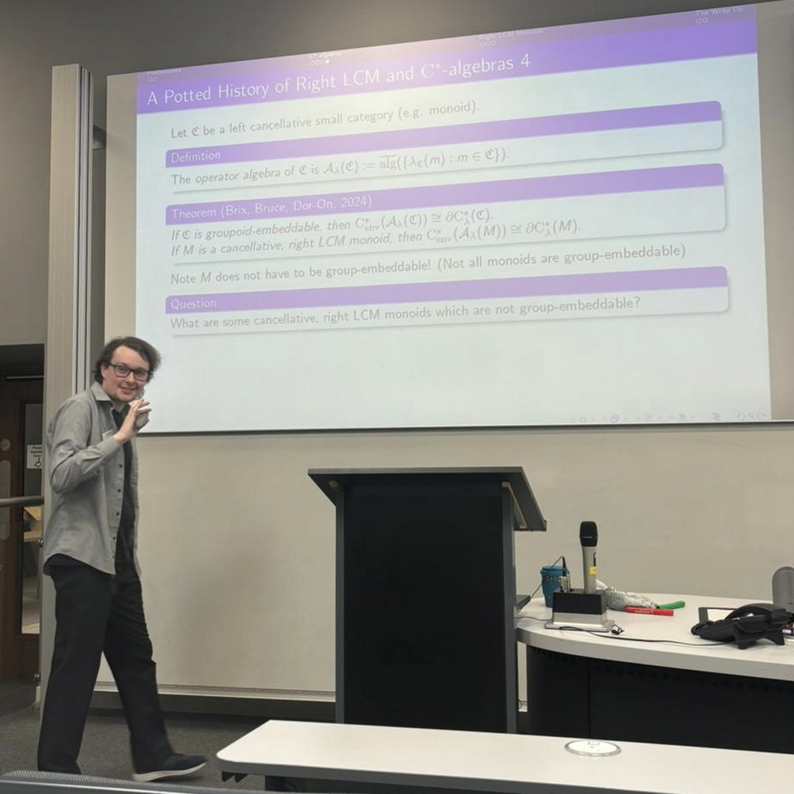
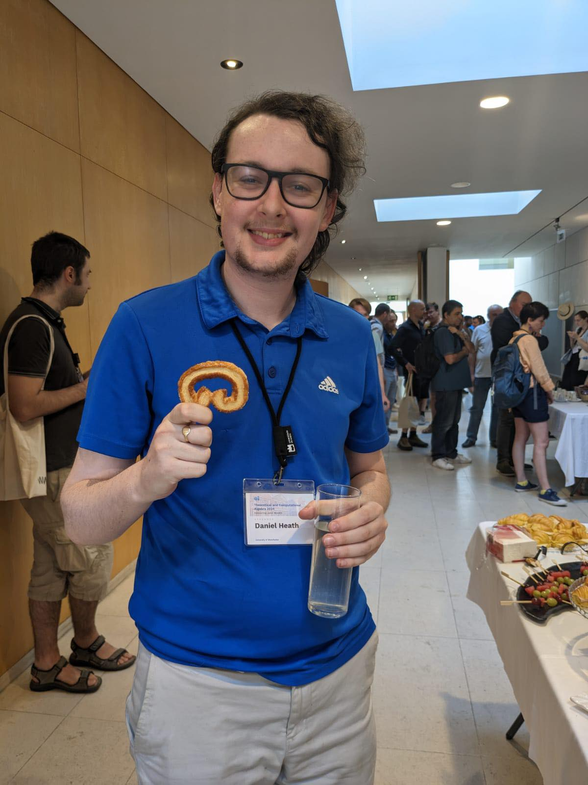

Office 1.127
Alan Turing Building
Manchester
M13 9PY
///gravy.aura.bonds
0161 275 7649
Office 1.127
Alan Turing Building
Manchester
M13 9PY
///gravy.aura.bonds
0161 275 7649

Where you may have seen me...
Teaching and External Mathematics
2023--Pres. Coordinator for MathsBombe.
2022--2024 MATH20621 Programming with Python.
2022--2023 MATH20201 Algebraic Structures 1.
I've also performed marking, covering and invigilation duties for various MATH units.
Organisation
11-04-2025 NBSAN XXXVII, University of Manchester.
With Josiah Aakre and Thomas Aird.
09-04-2025 Introduction to Modern Advances in Algebra 2025, University of Manchester.
With Isabel Martin-Lyons.
Winter 2024 Reading Group on C*-Algebras, University of Manchester.
2023/2024 Pure Postgraduate Seminar, University of Manchester.
With Anton Farmar and Peej Ingarfield.
25-03-2022 NBSAN XXXI: Young NBSAN, University of Manchester.
With Thomas Aird, Dmitry Kudryavtsev, Carl-Fredrik Nyberg Brodda and Georgia Schneider.
Selected talks and poster presentations
For a complete list, see details of every presentation I've given here.04-02-2026 Planar graphs, Monthly Seminar, Rochdale Sixth Form College. [Slides]
15-12-2025 Pretzel monoids, NBSAN XXXIX, Durham University. [Slides]
26-09-2025 Pretzel Monoids, MRSC XIX, University of Manchester. [Poster] Awarded best poster.
26-09-2025 How to complete a PhD (by someone who has*), MRSC XIX, University of Manchester. [Slides]
03-07-2025 Growth of monogenic free adequate monoids, Geometric and Combinatorial (Inverse) Semigroup Theory at Theoretical and Computational Algebra 2025, Universidade de Évora, PT. [Slides]
24-04-2025 An Introduction to Semigroup Theory, Transpennine Expressers Conference, University of Sheffield.
10-04-2025 Pretzel Monoids, Introduction to Modern Advances in Algebra 2025, University of Manchester. [Poster]
05-02-2025 Singly aligned monoids and group(oid)-embeddability relating to C*-algebras, Student Algebra Seminar, University of Manchester.
11-12-2024 Quasivarieties, Adequate Monoids and Expansions, York Semigroup, University of York. [Slides]
22-11-2024 Moroccan birds, coots, risk unending snow stoms for this talk? (13, 2, 10) - Combinatorics on Crosswords, Pure Postgraduate Seminar, University of Manchester. [Slides] Voted talk of the year.
27-09-2024 Three Cornerstones of Pure Mathematics, MRSC XVIII, University of Manchester.
04-09-2024 Pretzel Monoids: A Dive into Geometric Semigroup Theory, HDP 1-Day at Heilbronn Annual Conference 2024, University of Bristol. [Slides]
02-07-2024 Pretzel Monoids: Left Adequate Expansions of R. Cancellative Monoids, Theoretical and Computational Alg. '24, Universidade de Aveiro, PT. [Slides]
19-06-2024 Pretzel Monoids: Left Adequate Expansions of R. Cancellative Monoids, 75th British Mathematical Colloquium, University of Manchester. [Slides]
19-06-2024 Pretzel Monoids, 75th British Mathematical Colloquium, University of Manchester. [Poster]
13-06-2024 Non-Embeddable Right LCM Semigroups, UK Operator Algebras Conference, Newcastle University.
07-06-2024 C*-Algebras, Right LCM and Interval Monoids, Semigroup Seminar, University of Manchester.
15-04-2024 Embedding (Right LCM) Semigroups into Groups, Student Algebra Seminar, University of Manchester.
21-02-2024 Pretzel Monoids: A Dive into Geometric Semigroup Theory, Introduction to Modern Advances in Algebra, University of Exeter. [Slides]
29-09-2023 Left Adequate Semigroups and Graph Expansions, MRSC XVII, University of Manchester.
11-08-2022 Food Supply Graphs, HDP Summer Programme 2022, ICMS Edinburgh.
17-12-2021 Free Adequate Semigroups, Semigroup Seminar, University of Manchester.
Selected other conferences and meetings
11-04-2025 NBSAN XXXVII, University of Manchester (Organiser).
09-04-2025 Introduction to Modern Advances in Algebra 2025, University of Manchester (Organiser).
Weekly 23/24 Pure Postgraduate Seminar, University of Manchester (Organiser).
24-07-2023 HDP Summer Programme 2023, University of Bristol.
03-07-2023 Theoretical and Computational Algebra 2023, Pocinho, PT.
24-06-2022 Topics in Geometric Semigroup Theory and NBSAN XXXII, University of York.
25-03-2022 NBSAN XXXI: Young NBSAN, University of Manchester (Organiser).